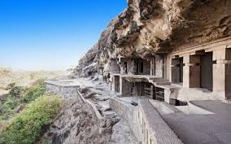

Ellora is a UNESCO World Heritage Site located in the Aurangabad district of Maharashtra, India. It is one
of the largest rock-cut Hindu temple cave complexes in the world, with artwork dating from the period
600–1000 CE. Cave 16 features the largest single monolithic rock excavation in the world, the Kailash
temple, a chariot-shaped monument dedicated to the god Shiva. The Kailash temple excavation also features
sculptures depicting various Hindu deities as well as relief panels summarizing the two major Hindu epics.
There are over 100 caves at the site, all excavated from the basalt cliffs in the Charanandri Hills, 34 of which
are open to public. These consist of 17 Hindu (caves 13–29), 12 Buddhist (caves 1–12) and 5 Jain (caves
30–34) caves, each group representing deities and mythologies prevalent in the 1st millennium CE, as well
as monasteries of each respective religion.[4] They were built close to one another and illustrate the religious
harmony that existed in ancient India. All of the Ellora monuments were built during the Rashtrakuta
dynasty (r. 753-982 CE), which constructed part of the Hindu and Buddhist caves, and the Yadava dynasty
(c. 1187–1317), which constructed a number of the Jain caves. Funding for the construction of the monuments was
provided by royals, traders and the wealthy of the region.
Although the caves served as temples and a rest stop for pilgrims, the site's location on an ancient South
Asian trade route also made it an important commercial centre in the Deccan region. It is 29 kilometres (18
miles) north-west of Aurangabad, and about 300 kilometres (190 miles) east-northeast of Mumbai. Today, the
Ellora Caves, along with the nearby Ajanta Caves, are a major tourist attraction in the Marathwada region of
Maharashtra and a protected monument under the Archaeological Survey of India (ASI).